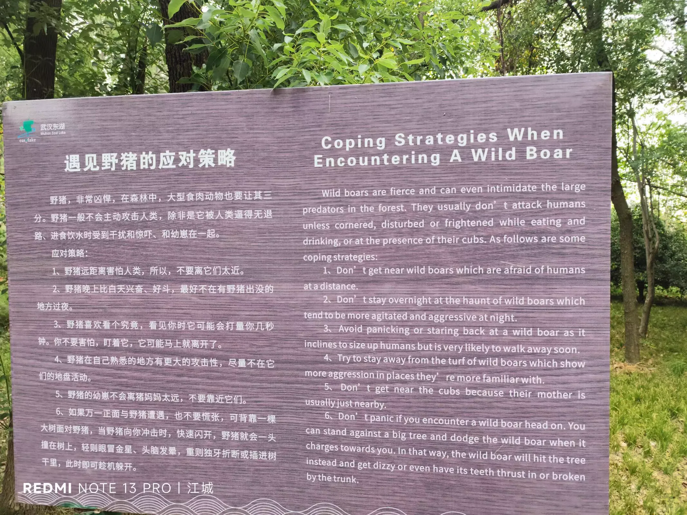
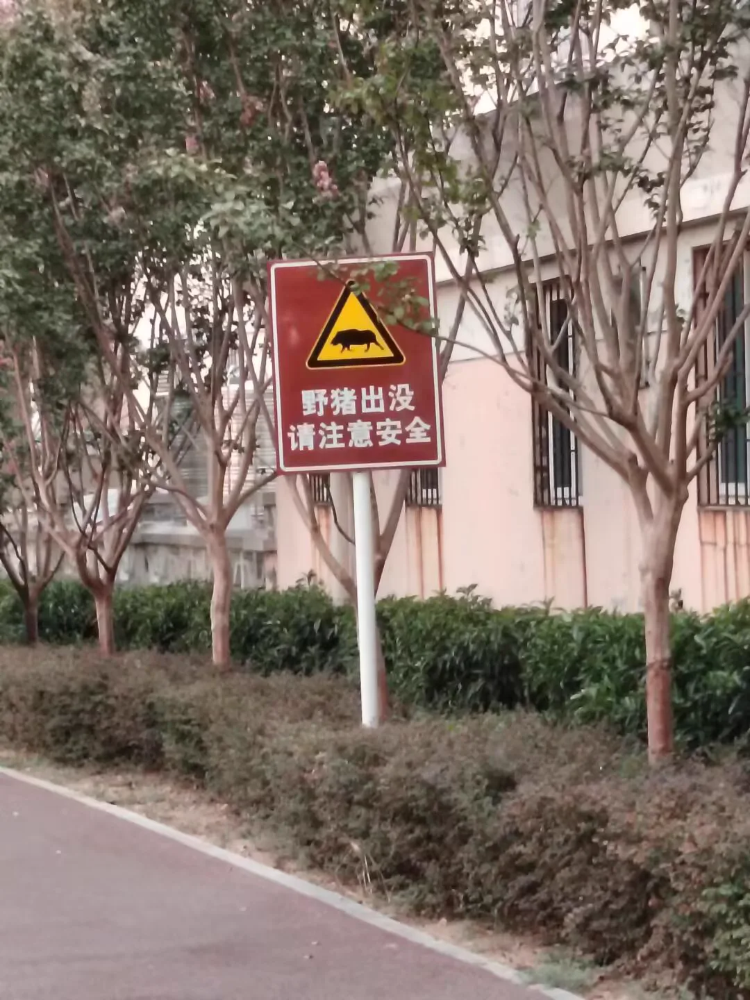

Journal · 2024-09-13
武汉市喻家山
地点是武汉市的喻家山
The location is Yujia Mountain in Wuhan.
Le lieu est le mont Yujia, à Wuhan.
Der Ort ist der Yujia-Berg in Wuhan.

程老师 : [搓手得意][搓手得意][搓手得意]
程老师 : [搓手得意][搓手得意][搓手得意]
程老师 : [搓手得意][搓手得意][搓手得意]
程老师 : [搓手得意][搓手得意][搓手得意]

2024年9月13日 11:53 柴江赣北 回复程老师 : 我好想给野猪拍照 2024年9月13日 13:02
2024年9月13日 11:53 柴江赣北 回复程老师 : I really want to snap a photo of the wild boar 2024年9月13日 13:02
2024年9月13日 11:53 柴江赣北 回复程老师 : J'ai trop envie de photographier le sanglier 2024年9月13日 13:02
2024年9月13日 11:53 柴江赣北 回复程老师 : Ich würde so gern das Wildschwein fotografieren 2024年9月13日 13:02